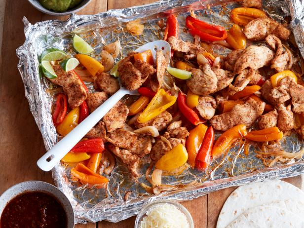

Sheet Pan Fajitas

Description
These protein-packed fajitas cleverly use a foil-lined baking sheet and broiler to
make a quick and healthy weeknight meal with easy clean up.
Ingredients
- 1 tablespoon chili powder
- Kosher salt and freshly ground black pepper
- 1 pound baby bell peppers (12 to 15 peppers), halved, stemmed and seeded
- 1 large yellow onion, halved and thinly sliced
- 2 tablespoons extra-virgin olive oil
- 1 1/2 pounds boneless, skinless chicken breast
- Juice of 1 lime, plus lime wedges, for serving
- 8 fajita-size flour tortillas, warmed
- Shredded Monterey Jack cheese, guacamole, hot sauce, salsa and sour cream, for serving
Steps
-
Preheat the broiler to high. Line a rimmed baking sheet with foil.
-
Combine the chili powder, 2 teaspoons salt and 1 teaspoon pepper in a small bowl.
Put the peppers and onions on the prepared baking sheet, drizzle with 1 tablespoon
of the oil and season with half the chili powder mixture. Broil until softened and
starting to char, about 10 minutes.
-
Meanwhile, cut the chicken into 1/4-inch-thick slices and toss in a large bowl with
the remaining chile powder mixture and 1 tablespoon oil.
-
After the peppers are softened and starting to char, about 10 minutes, scatter the chicken
on top of the peppers and onions and return the baking sheet to the broiler until the chicken
is cooked through and starting to brown, about 5 minutes more. Drizzle with the lime juice.
-
Serve with the warmed tortillas, Monterey Jack cheese, guacamole, hot sauce, salsa, sour cream and lime wedges.
Return to main page